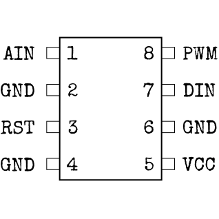
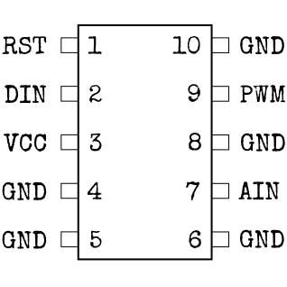
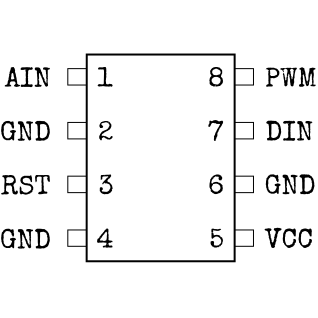
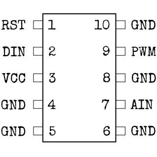

Na téma Mikroprocesoru (čeština)
Říká se tomu “mikro”procesor, přesto je tato věc docela velká. Pravděpodobně proto, že může způsobit docela velkou explozi...
- Použijte typ procesoru a jeho velikost abyste zjistili nastavení pinu pomocí níže uvedených diagramů.
- Bílá značka na procesoru značí kde se nachází pin číslo 1. Ostatní piny jsou ve vzestupném pořadí na stejné straně jako je pin 1 a potom se pokračuje z opačné strany opačným směrem.
- S použitím tabulky zjistěte správný kód barev.
- U každého pinu vyberte správnou barvu pomocí stisku tlačítek UP a DOWN a potvrďte svojí odpověď tlačítkem OK (další pin se vybere automaticky).
Nastavení Pinu
Strike (STRK) Procesor:


Diode (LEDS) Procesor:


Countdown (CNTD) Procesor:


 


